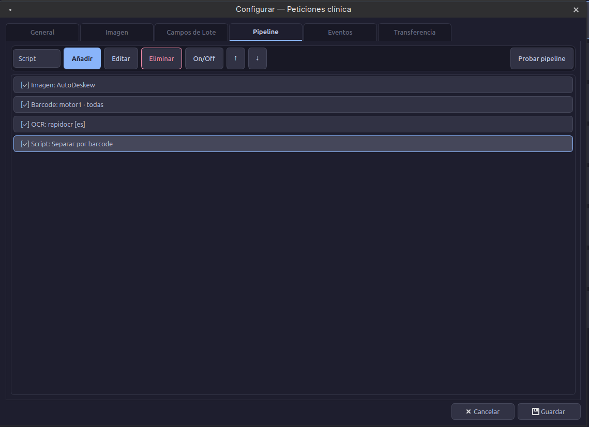

Pipeline¶
El pipeline es el corazón de DocScan Studio. Cada página escaneada/importada pasa por una secuencia configurable de pasos.
┌──────────┐ ┌──────────┐ ┌──────────┐ ┌──────────┐
│ ImageOp │──▶│ Barcode │──▶│ OCR │──▶│ Script │
└──────────┘ └──────────┘ └──────────┘ └──────────┘
Tipos de paso¶
| Tipo | Descripción | Ejemplo |
|---|---|---|
image_op |
Operación de imagen | AutoDeskew, Crop, FxGrayscale |
barcode |
Lectura de barcodes | Code128 en zona superior |
ocr |
Reconocimiento de texto | RapidOCR página completa |
script |
Lógica Python | Separar por barcode |
Operaciones de imagen¶
23 operaciones disponibles
| Operación | Descripción |
|---|---|
| AutoDeskew | Corrección de inclinación |
| ConvertTo1Bpp | Blanco y negro (1 bit) |
| Crop | Recorte rectangular |
| CropWhiteBorders | Recorte de márgenes blancos |
| CropBlackBorders | Recorte de márgenes negros |
| Resize | Redimensionar |
| Rotate | Rotar 90°/180°/270° |
| RotateAngle | Rotación libre |
| SetBrightness | Ajustar brillo |
| SetContrast | Ajustar contraste |
| RemoveLines | Eliminar líneas |
| FxDespeckle | Eliminar ruido |
| FxGrayscale | Escala de grises |
| FxNegative | Invertir colores |
| FxDilate | Dilatación |
| FxErode | Erosión |
| FxEqualizeIntensity | Ecualización |
| FloodFill | Relleno |
| RemoveHolePunch | Quitar perforaciones |
| SetResolution | Ajustar DPI |
| SwapColor | Intercambiar colores |
| KeepChannel | Extraer canal |
| RemoveChannel | Eliminar canal |
Simbologías de barcode¶
| Simbología | Motor 1 (pyzbar) | Motor 2 (zxing-cpp) |
|---|---|---|
| Code128 |  |
|
| Code39 | |
|
| QR Code | |
|
| DataMatrix | |
|
| PDF417 | |
|
| EAN-13/8, UPC-A/E | |
|
| Aztec |  |
|
| MaxiCode | |
|
| MicroQR | |
|
Control de flujo¶
Los scripts pueden controlar la ejecución del pipeline:
def mi_script(app, batch, page, pipeline):
# Saltar un paso
pipeline.skip_step("paso_ocr_1")
# Repetir (máx. 3 veces)
pipeline.repeat_step("paso_barcode")
# Abortar (marca para revisión)
pipeline.abort("Error crítico")
# Compartir datos entre pasos
pipeline.set_metadata("tipo_doc", "factura")
Probar pipeline¶
El botón Probar pipeline permite ejecutar todos los pasos sobre una imagen de muestra y ver el resultado paso a paso.
